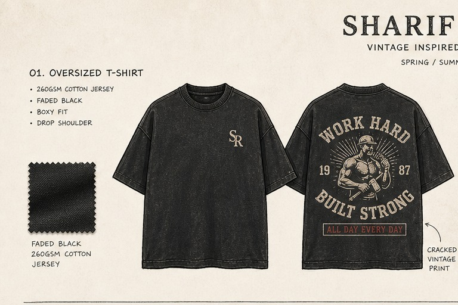
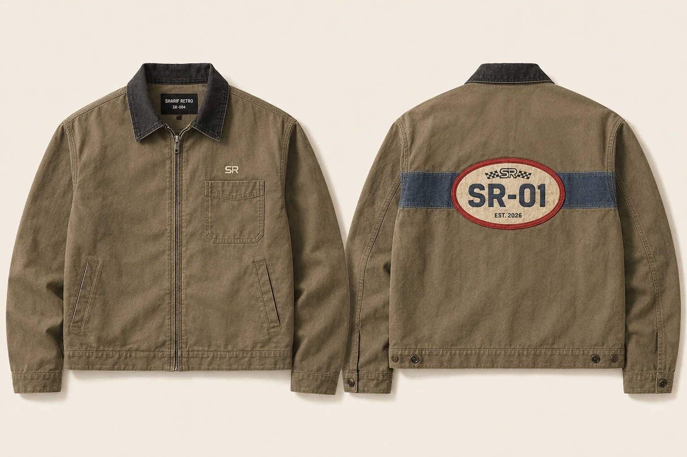
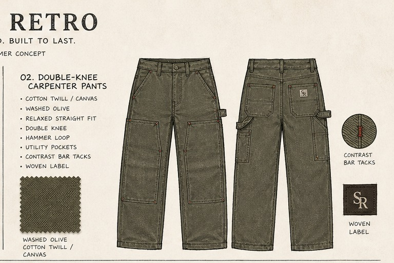
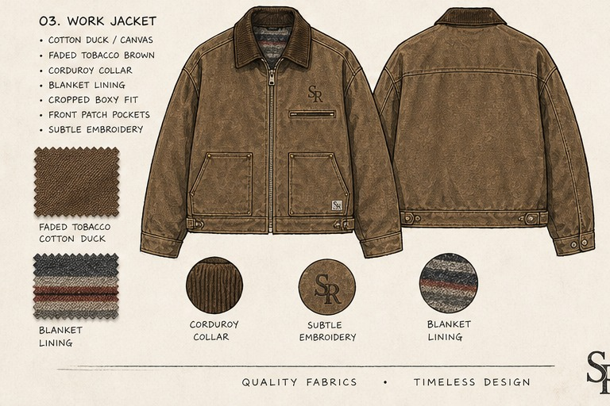
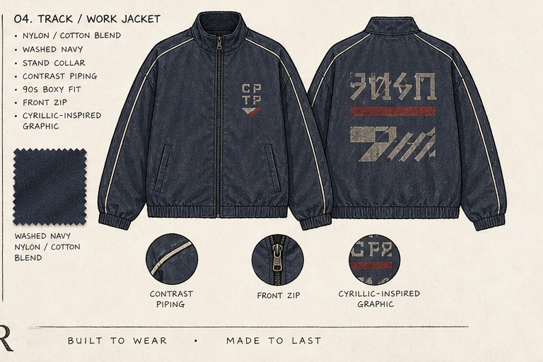
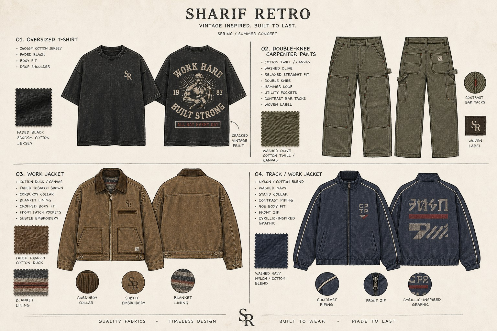

01
Oversized T-Shirt
280 GSM cotton jersey · boxy fit · vintage wash
280克纯棉针织 · 宽松版型 · 复古水洗
VINTAGE INSPIRED. BUILT TO LAST.
复古灵感，现代工装。为日常而生，经久耐穿。

SHARIF RETRO is the fashion label of 上海沙利睿创多媒体制作有限公司, combining apparel design, visual direction and multimedia production.
SHARIF RETRO 隶属于上海沙利睿创多媒体制作有限公司，专注服装设计、视觉创意与多媒体制作。
SS26 CAPSULE / 2026春夏胶囊系列

280 GSM cotton jersey · boxy fit · vintage wash
280克纯棉针织 · 宽松版型 · 复古水洗

12 oz cotton canvas · relaxed straight fit
12盎司棉帆布 · 宽松直筒版型

Duck canvas · corduroy collar · blanket lining
棉鸭布 · 灯芯绒领 · 毛毯纹里布

Washed nylon-cotton · contrast piping
水洗棉尼混纺 · 撞色滚边

OUR APPROACH / 品牌理念
We reinterpret utilitarian clothing through contemporary proportion, washed textures and restrained graphics. Every piece is developed with production-ready specifications and long-term wear in mind.
我们以现代比例、复古水洗质感与克制图形重新诠释工装服饰。每件产品均以可量产标准开发，并重视长期穿着体验。
CREATIVE STUDIO / 创意工作室
Identity systems, collection direction and visual language.
品牌视觉系统、系列策划与创意方向。
Concepts, technical packs, sample development and supplier communication.
服装概念、技术包、样衣开发与供应商沟通。
Product photography, short-form video, campaign content and post-production.
产品摄影、短视频、品牌内容与后期制作。
CONTACT / 联系我们
期待与您共同打造经得起时间考验的作品。
上海沙利睿创多媒体制作有限公司
SHARIF RETRO
Email: maxi0495.mk@gmail.com
Phone / 电话: +86 153 1706 0960
Address / 地址:
中国上海市静安区武定路550号303室
Room 303, No. 550 Wuding Road, Jing'an District, Shanghai, China